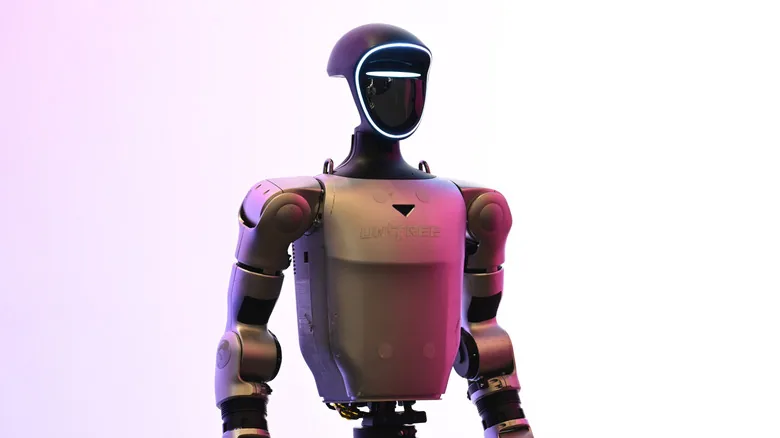

China's Cloud Robotics: The $14B Bet That Robot Brains Belong in the Cloud
CloudMinds and Datta Robotics, a ¥412.6B domestic market, and the cloud-vs-on-device AI race.
China has been the world's largest buyer of industrial robots for 13 straight years — and its robotics industry is now the fastest-growing on the planet. Here are the official numbers, the fastest-moving segments, and what the cloud, educational and clean-room niches are actually worth.

Any answer to "how big is China's robotics market" depends on which lens you use — official industrial statistics, market-research estimates, or segment-specific trackers. This guide consolidates the numbers with sources so you can quote them with confidence.
The most authoritative figure comes from China's Ministry of Industry and Information Technology (MIIT): revenue of robot-industry enterprises above designated size surpassed RMB 300 billion (about $44.2 billion) in 2025, with an average annual growth rate above 20% over the past five years. For the first half of 2026, revenue hit RMB 165.5 billion, up 24.5% year-on-year. MIIT released these figures around the 2026 World Robot Conference in Beijing, which drew a record number of exhibitors.
Market-research houses work in dollars and tend to measure "market size" differently. One widely cited estimate puts China's robot market at $15.5 billion in 2026 — about 28% of global demand and the largest national share, after growing from $4.22 billion in 2015. China has now been the world's largest industrial-robot market for 13 consecutive years (IFR installation data), and its 2024 industrial-robot installations reached a record 295,000 units, with an operational stock above 2 million.
Within that total, the embodied-intelligence line is the one to watch: the domestic market exceeded RMB 22 billion in 2026, with the State Council's Development Research Center projecting RMB 400 billion by 2030 and over RMB 1 trillion by 2035. IDC, meanwhile, estimates user spending on embodied-intelligent robots in China at more than $11 billion in 2026 — nearly 120% growth.
| Market | 2025–26 size | Growth | China's position |
|---|---|---|---|
| Industrial robots | 295k installations (2024, IFR) | Record annual installs | World #1 for 13 straight years; 54% of global installs |
| Overall robot market | ~$15.5B (2026) | ~28% of global demand | Largest single national market |
| Humanoid / embodied AI | RMB 22B+ (2026); $11B user spend | ~120% user-spend growth | Global leader in shipments (AgiBot, Unitree, UBTECH) |
| Service robots | ~$400M commercial service (2026, IDC) | 85%+ of global shipments by Chinese brands | Robot vacuums, delivery, cleaning |
By comparison, the United States leads in software and AI platforms, Europe leads in precision industrial automation (ABB, KUKA, FANUC maintain large installed bases), and Japan dominates core components like harmonic drives and precision motors — but China combines the largest demand base, the deepest supply chain, and the fastest cost-down curve.
Cloud robotics — robots that offload compute, models or fleet management to cloud platforms — is one of China's fastest-growing niches. Market Research Future sizes the China cloud robotics market at $449.52 million in 2025, growing to $2,840.54 million by 2035 (20.2% CAGR). Fortune Business Insights puts China at nearly 35% of the global cloud robotics market, which it projects from $12.43 billion in 2026 to $75.18 billion by 2034 (25.2% CAGR). Verified Market Reports gives a more conservative China figure: $1.4 billion in 2024, reaching $5.2 billion by 2033 (16.2% CAGR).
Industrial manufacturing is the anchor use case (roughly 40% of demand), followed by medical and healthcare (~22%). The enablers are China's public-cloud scale (Alibaba Cloud, Huawei Cloud, Tencent Cloud), 5G coverage, and fleet-deployed robot families such as Geek+ AMRs and Pudu's delivery robots. Read the full story of China's cloud robotics bet →
| Source | China cloud robotics size | Forecast | CAGR |
|---|---|---|---|
| Market Research Future | $449.5M (2025) | $2,840.5M (2035) | 20.2% |
| Fortune Business Insights | ~35% of global market | Global: $12.4B (2026) → $75.2B (2034) | 25.2% |
| Verified Market Reports | $1.4B (2024) | $5.2B (2033) | 16.2% |
China is the world's largest educational-robot market by hardware output. IDC data show hardware sales of RMB 1.07 billion in H1 2025, up 12.5% year-on-year, projected to reach RMB 3.93 billion by 2029 as policy-driven STEM penetration deepens. Verified Market Reports sizes China's early-childhood education robot segment at $0.40 billion in 2024 → $1.20 billion by 2033 (~13.8% CAGR). In the software layer, Global Growth Insights gives China $0.18 billion — about 30% of the global education-robot software market, growing at 24%.
The demand is policy-engineered: the State Council's New Generation AI Development Plan pushes AI and coding education into K-12, and 素质教育 (quality-oriented education) reforms sustain after-school robotics programs. Leading domestic vendors include UBTECH (education line), Makeblock (童心制物, modular kits), Dobot (越疆, desk-top arms and kits) and Abilix (能力风暴).
Clean-room robots — ISO-classified arms and wafer-handling systems for semiconductors, pharma and precision electronics — are China's quietest large niche. Global Growth Insights sizes China's clean-room robot market at $1.10 billion in 2025, about 37% of the global total — ahead of Japan ($0.85B, 28%) and South Korea ($0.63B) — with semiconductor fab expansion the driver. MarketsandMarkets projects China's clean-room robot CAGR at 11.5–13.0%, among the fastest globally. At the semiconductor-robot level, YHResearch puts the global market at RMB 11.56 billion in 2024, reaching RMB 17.04 billion by 2031.
Chinese clean-room suppliers are scaling fast: SIASUN (新松) builds clean-room SCARA and articulated arms, ESTUN (埃斯顿) and STEP (埃夫特) ship clean-room-rated robots, and a wave of wafer-transfer specialists is emerging for domestic fabs — the same import-substitution pattern already seen in reducers and actuators. See who leads China's clean-room robot market →
MIIT reports revenue above RMB 300 billion (~$44 billion) for 2025 among robot-industry firms above designated size, growing more than 20% per year over five years; 2026 H1 revenue reached RMB 165.5 billion (+24.5%). Industry estimates put China's 2026 robot market at ~$15.5 billion, roughly 28% of global demand.
Embodied intelligence and humanoid robots (IDC: user spending above $11 billion in 2026, ~120% growth), commercial service robots, and clean-room robots for semiconductors — where China is the largest national market at ~37% of global demand.
Market Research Future: $449.52 million (2025) → $2,840.54 million (2035), 20.2% CAGR. Fortune Business Insights puts China at ~35% of a global cloud-robotics market growing from $12.43B (2026) to $75.18B (2034).
IDC: hardware sales of RMB 1.07 billion in H1 2025 (+12.5%), projected to reach RMB 3.93 billion by 2029. Verified Market Reports sizes China's early-childhood segment at $0.40B (2024) → $1.20B (2033).
Global Growth Insights: $1.10 billion in 2025, ~37% of the global total and the largest national market. MarketsandMarkets: 11.5–13.0% CAGR, driven by semiconductor fab capacity.
CloudMinds and Datta Robotics, a ¥412.6B domestic market, and the cloud-vs-on-device AI race.
Topstar, SIASUN and Estun inside SMIC and YMTC fabs — the semiconductor-automation bet.
IDC data, policy drivers and the domestic vendors — UBTECH, Makeblock, Dobot.
The 140+ humanoid companies and the components behind the world's fastest robot line.
From import dependence to 13 years as the world's largest market.
The service-robot segment where Chinese brands ship 85%+ of global volume.
Company profiles, product pages and supplier analysis for China's robotics ecosystem.